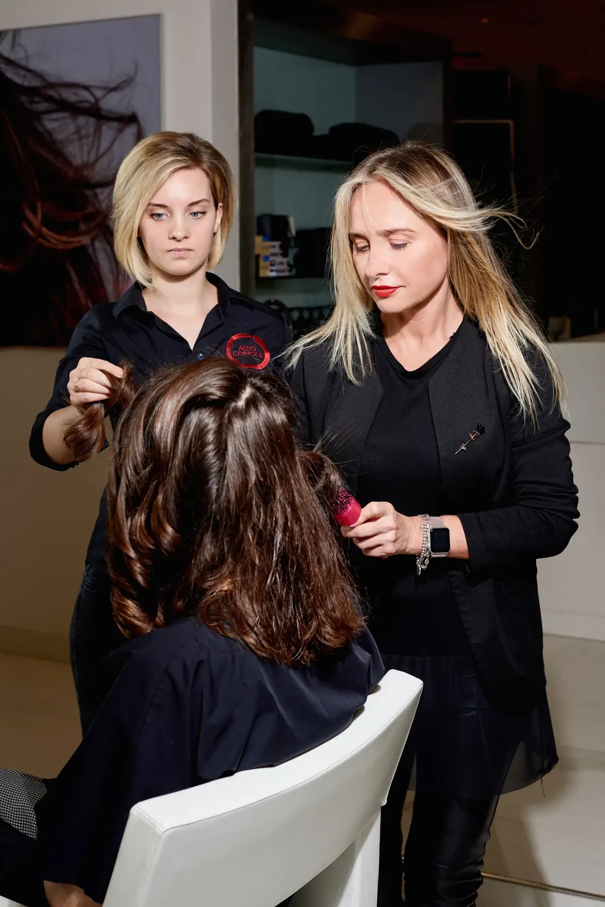

Самое дорогое в жизни занятой женщины — время. Центры Aldo Coppola первыми в России предложили параллельное обслуживание: несколько мастеров работают с клиенткой одновременно. Визит, который в обычном салоне растянулся бы на день, укладывается в пару часов.
Как это выглядит на практике
Вы садитесь в кресло к колористу. Пока окрашивание проявляется, мастер маникюра работает с руками, а мастер педикюра — с ногами. После мытья головы и стрижки — укладка, а в это время уже высыхает покрытие. Если в плане есть брови или макияж, их ставят в конец, чтобы всё было свежим.

Важно, что мастера не мешают друг другу. Порядок услуг продуман заранее: что можно делать одновременно, а что только по очереди. Например, уход для лица не ставят параллельно с окрашиванием, а маникюр — с мытьём головы.
Какие услуги можно совместить
- Окрашивание или стрижка + маникюр и педикюр.
- Уход для волос + уход для лица.
- Укладка + макияж + маникюр — классика перед мероприятием.
- Окрашивание + брови и ресницы.
Медицинские процедуры косметологии обычно проходят отдельно, в кабинете врача. Но их можно поставить в тот же визит до или после парикмахерского зала — об этом лучше договориться при записи.
Как записаться на параллельный визит
- Позвоните в выбранный центр или напишите администратору. Онлайн-запись удобна для одной услуги, а для нескольких сразу лучше поговорить с человеком.
- Перечислите услуги и скажите, сколько у вас времени.
- Администратор подберёт мастеров и составит порядок. Если нужно уложиться к определённому часу, скажите об этом заранее.

Для кого VIP-кабинеты
Если вы цените уединение или планируете большую программу, можно попросить VIP-кабинет. В нём работают те же мастера, но без общего зала.
Сколько времени это экономит
Точная цифра зависит от набора услуг. Но логика простая: если маникюр, педикюр и окрашивание идут одновременно, вы тратите время одной, самой долгой услуги, а не всех трёх подряд.
Вопросы и ответы
Сколько услуг можно сделать одновременно?
До шести за один визит. Точный набор зависит от того, какие услуги можно совмещать между собой.
Это дороже, чем делать услуги по отдельности?
Каждая услуга стоит по прайсу салона. За то, что они идут одновременно, отдельной платы нет.
Можно ли совместить косметологию и парикмахерский зал?
Медицинские процедуры проходят в кабинете врача, но их можно поставить в тот же визит до или после работы стилиста.